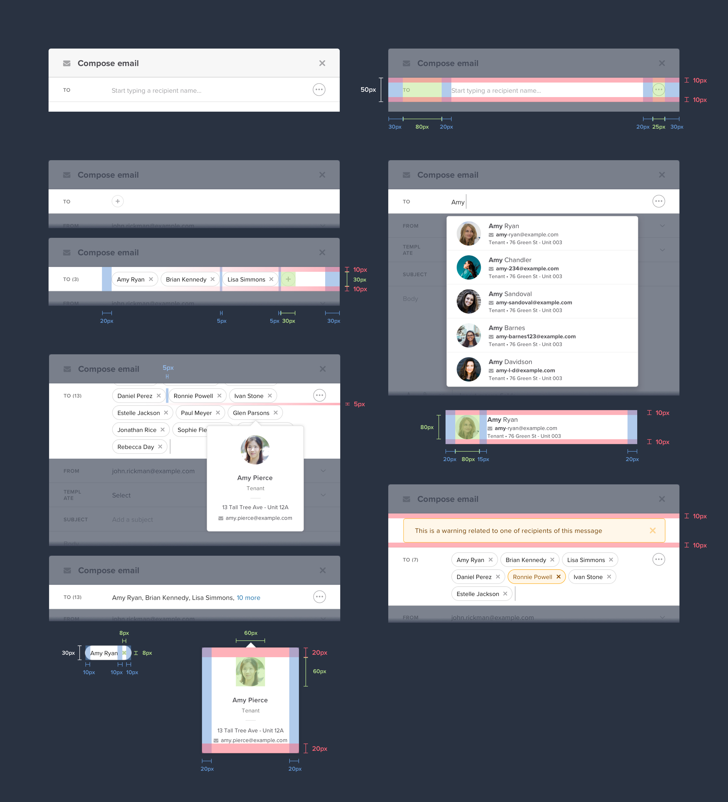
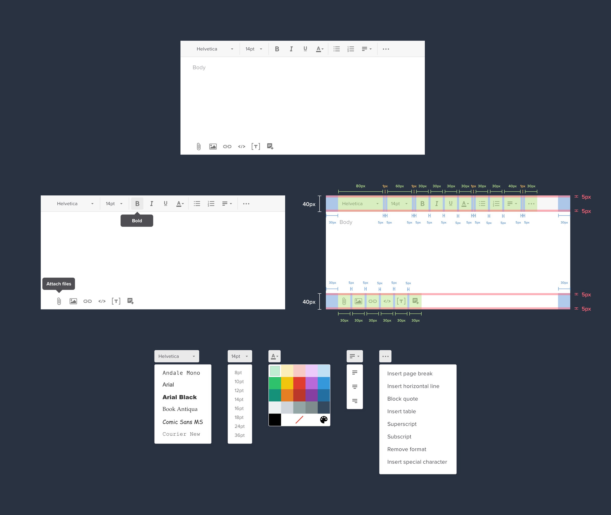
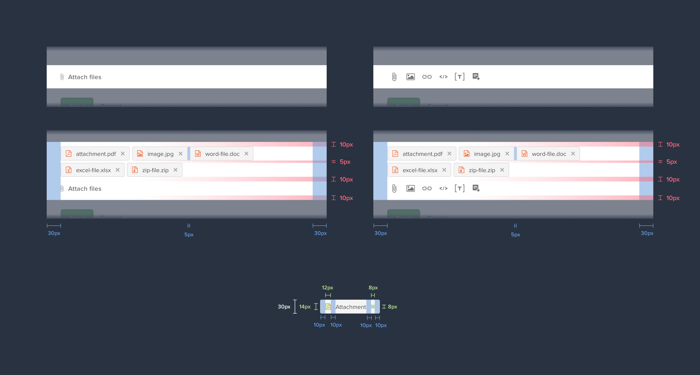
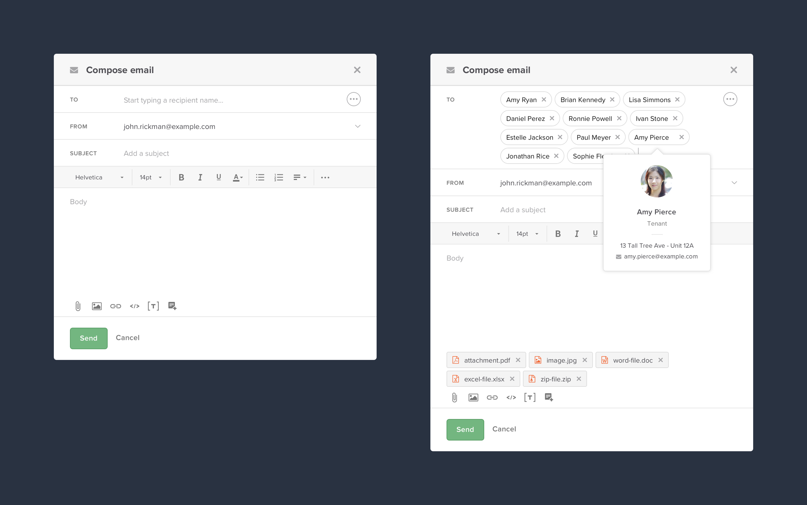
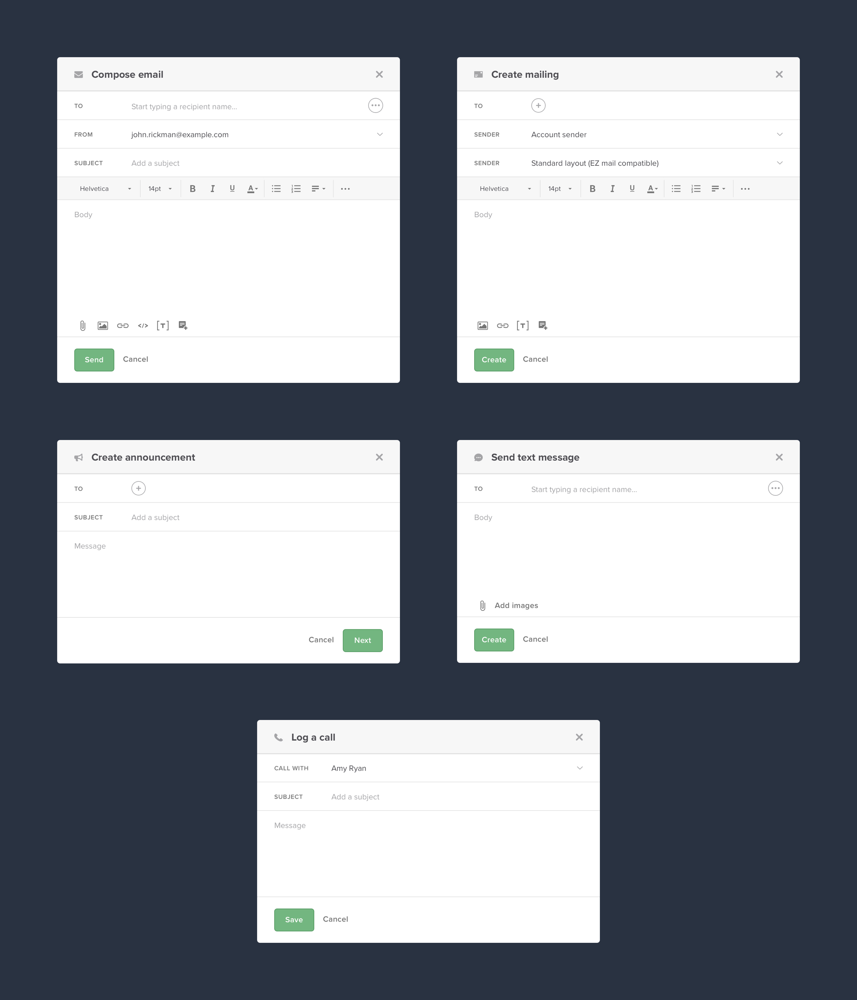

Systems Design: Communications
Crafting a consistent communications experience
Crafting a consistent communications experience
Buildium's suite of communication worklfows were inconsistent from one to the next and didn't match a user's mental model for online communication patterns. This led to a higher margin or error, more time on task, and a general lack of confidence for property managers who were comminicating with their customers.
Craft a system of reusable UI components that can be shared between Buildium communication workflows, creating a cohesive experience across the application that feels intuitive and familiar to a user.
Product owner, Software developers (5), UX Writer, Senior UX Designer (Me)
Buildium
The communication experiences in Buildium used to compose a message existed primary as long convoluted form pages. The format of these pages resulted in unnecessary scrolling, significant cognitive load, and did not match the mental model that users expected from a “compose message” experience. Existing experiences for workflows such as “Composing an email”, “Creating a mailing”, or “Sending a bulk text message” varied significantly in their design, which offered little guidance for designers and engineers on how to best iterate on these current communication workflows or build new ones. An opportunity existed to create a more cohesive ecosystem of Communications UI components and workflows.
Communication plays an important part of a property manager's day to day. On any given day a property manager is communicating with residents, applicants, rental owners and vendors across a variety of communication mediums. The scope of this communication ranges from one-on-one messages to mass communications to entire properties. Communication can be intiatiated via several different mediums and throughout various workflows. This makes it critical that a property manager clearly knows when they are about to communicate with one of their customers. To ensure a consistent UI that is familiar to user, I designed a suite of resusable communication components that could be utlized across all our communication message crafting experiences.
When it comes to sending a message, having a clear and easy way of selecting recipients needs to be available.
Some messages require the ability for a user to customize the contents of their message. From adjusting font size and text styling, to attaching images and files, users need an intuitive way to make sure their message fulfills their specific needs.
Attachments are a key part of how users communicate a message on the web and they need a UI that supports the flexbility of attaching multiple files.
Pulling together the above components and interactions (and many more not featured) result in a whole that is larger the sum of its parts. When combined these components create communication experiences that users will find familiar from their experiences communicating on the web.
By building a framework based on these resuable components, we are able to construct a variety of communication-based experiences that fulfill different user needs. Utilizing a design system of communication components, building future experiences like these will be faster to produce and ensure instant familiarity to a user upon launch.
